Family has always consisted of people I care about and can talk to about anything. It doesn't matter if we're related by blood, sweat, tears, or by anything other than existing in this same timeline. What matters is the connection that I place in them, and how I share my thoughts and feelings with them regularly. My family, containing both blood relatives and the best of friends, mean the world to me because they are always willing to listen and/or lend me a hand. Whether it's words of encouragement, late night talks to flesh out emotions and ideas, or any form of communication. My family is always there to assist in any way they can.
My family has most notably gotten me to where I am by raising me and staying by my side through any event life has thrown at me. Every nasty breakup, passing grade, or failing, my family is always there. They give me the encouragement I need in order to keep me focused on my goals of being a civil engineer in Sweden by the time I am 30 years old.
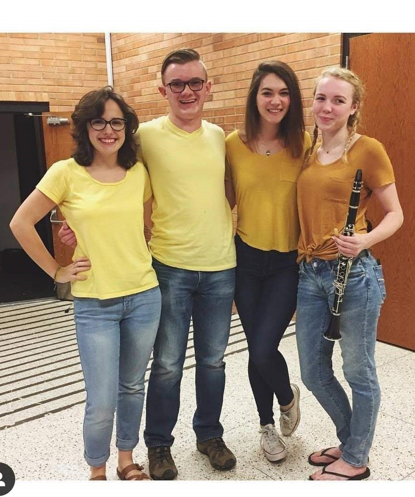
Entertainment
Entertainment has definitely been a medium I've used both to understand others, but also in interacting with people. There is nothing quite like sharing a youtube video with a friend, or performing a song in a symphony with fellow musicians. That's why beneath this paragraph I have put in photos from many of the meaningful groups I've performed with over my 21 years of life. In creating entertainment there is a form of expression, i think, that is what can make humans particularly unique. Everyone performs with their own style, but in an ensemble of any size or instrumentation, you have to work with those other individuals and work to create something beautiful as a group.
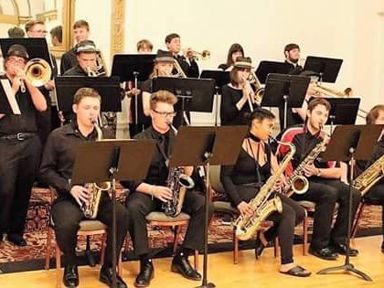
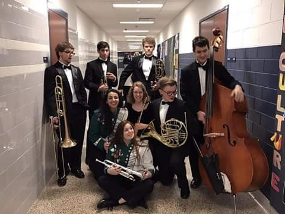
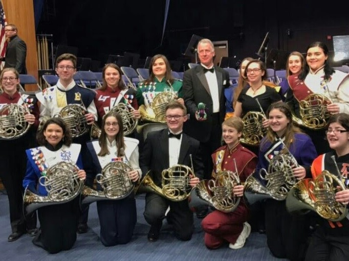
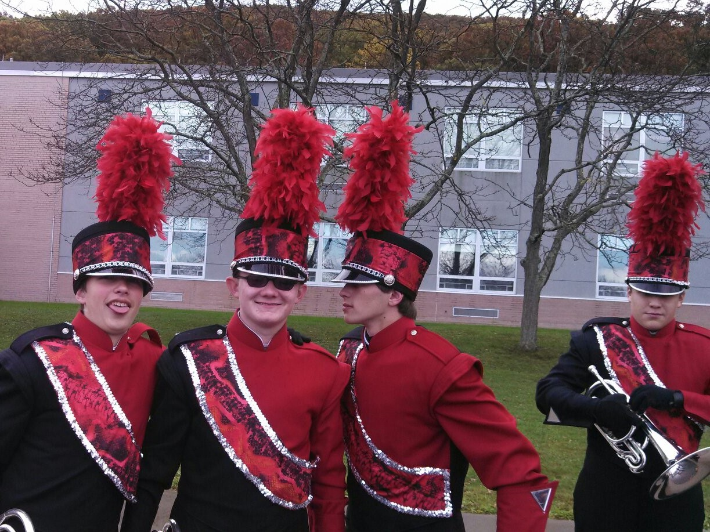
Community
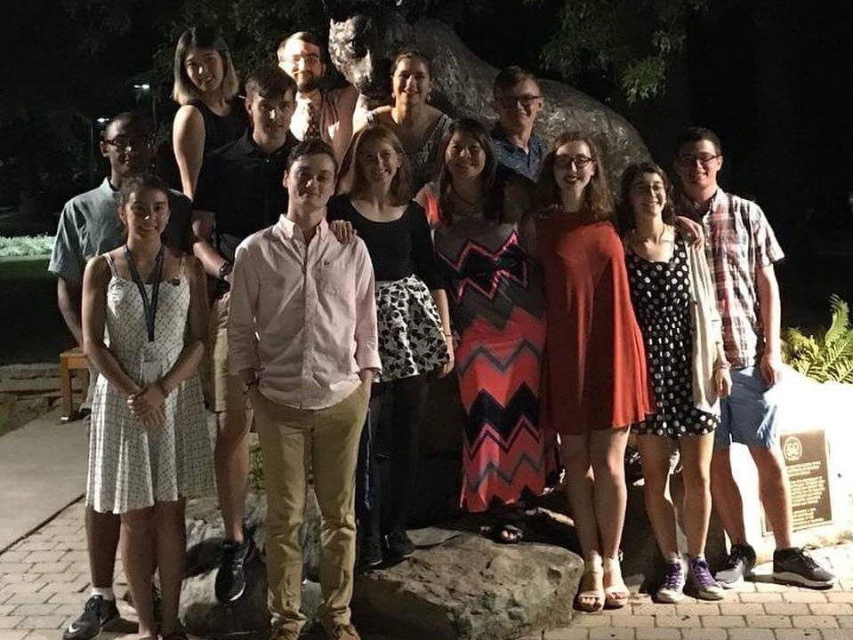
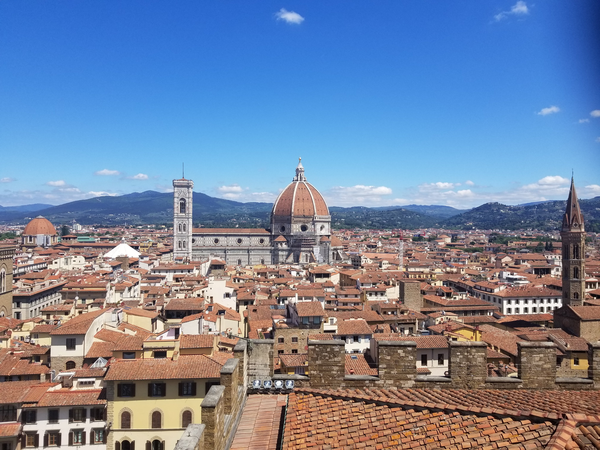
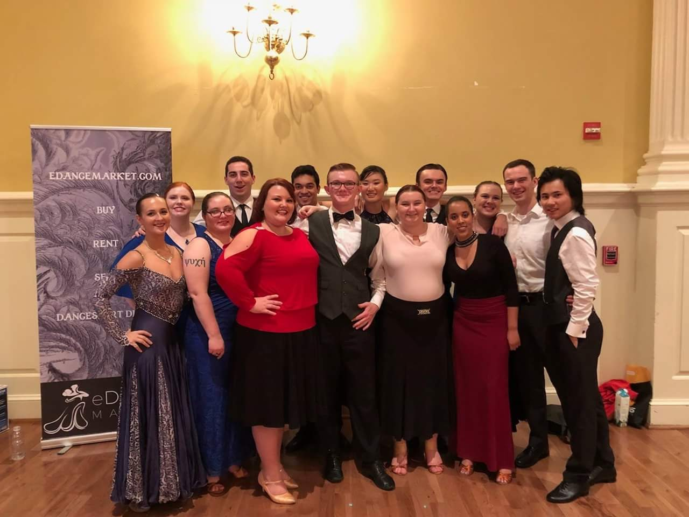
I do not simply have one community of which I am a part of. This is because my different communities fulfill different portions of my life. My main communities of which I am a part of are the clubs at Pitt in which I participate. Such as the American Society of Civil Engineers, Pitt Ballroom Club and Pitt Band. In these communities I find new friends, great coworkers, and people who are passionate about both similar things as me, but also different things. These clubs help me grow and reach outside of my comfort zone.
My other community is less sentient, but alive nonetheless. For me, nature has always been a place where I find peace, fun, excitement, and danger. Sometimes this even occurs at the same time! Nature is just a community I've had since I was a child, and I very much enjoy being a part of it, as all living things are. Many of my stories involve this community, whether it's a bear attack in New Mexico, a boar encounter in the Alps of Switzerland, or a pleasant camping trip along Pine Creek, and because of all these stories and events in my life, they have shaped who I am today.
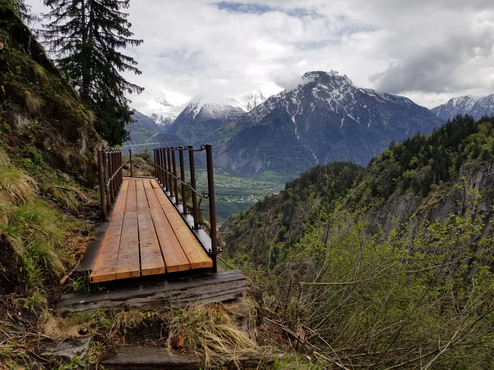
School
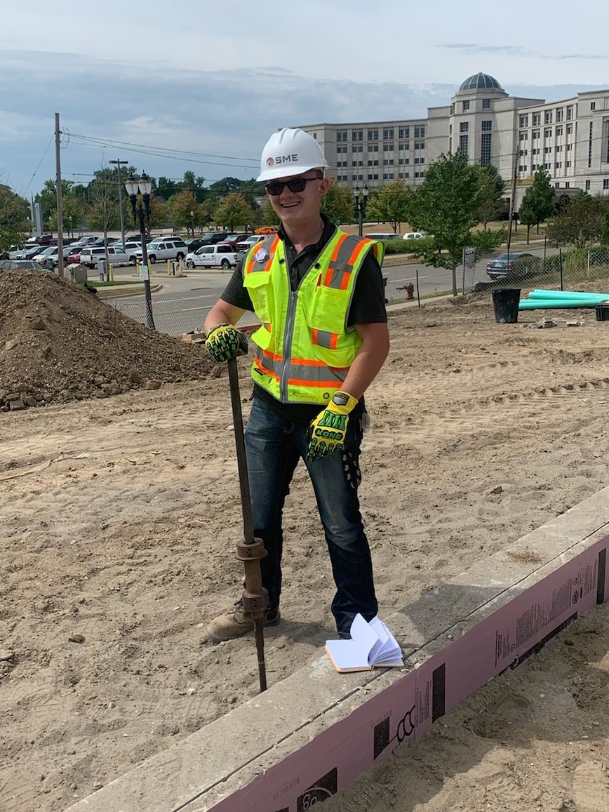
I am a firm believer in the fact that people never stop learning unless they decide to flat out reject all new ideas that are put in front of them. Following along this principle I have learned a lot in my life thus far. I've learned leadership, teamwork, and survival skills from the Boy Scouts of America. I've learned academic subjects ranging from music to history to mathematics from public education. And I've learned social skills from every interaction I've ever had with both individuals and groups.
All these learning experiences continually shape who I am as a person and as a member of society on an almost daily basis. Knowing this, I believe that this learning is taking me toward some higher plane of understanding. This is not to say it is putting me above my peers by any means, but is instead giving me tools and experience that I can use to relate to even more people. Instead of being pigeon-holed into only knowing one thing, I instead am expanding the scope of my knowledge so that I can interact with more and more people.
I believe that this understanding that I am working toward is one of the main goals of human existence. Our search for knowledge and answers has caused so many events, it is hard to argue that this pursuit is not one of core motivations. Following this, I hope that I can both contribute to that higher understanding we strive for, but also that I will never regret what I've learned.
 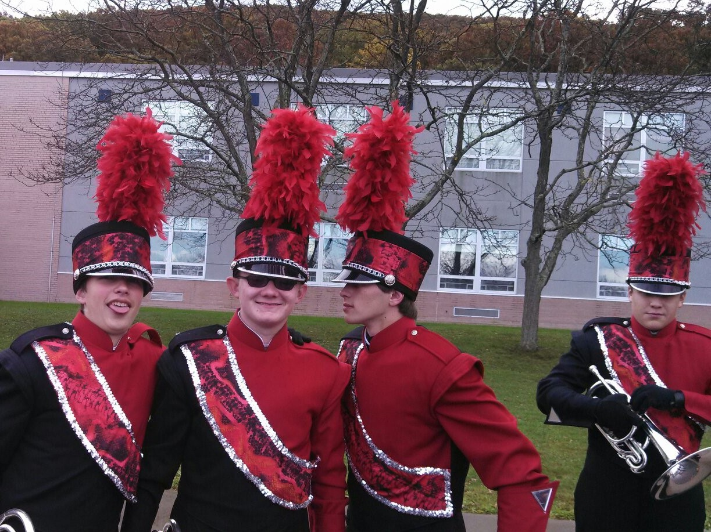
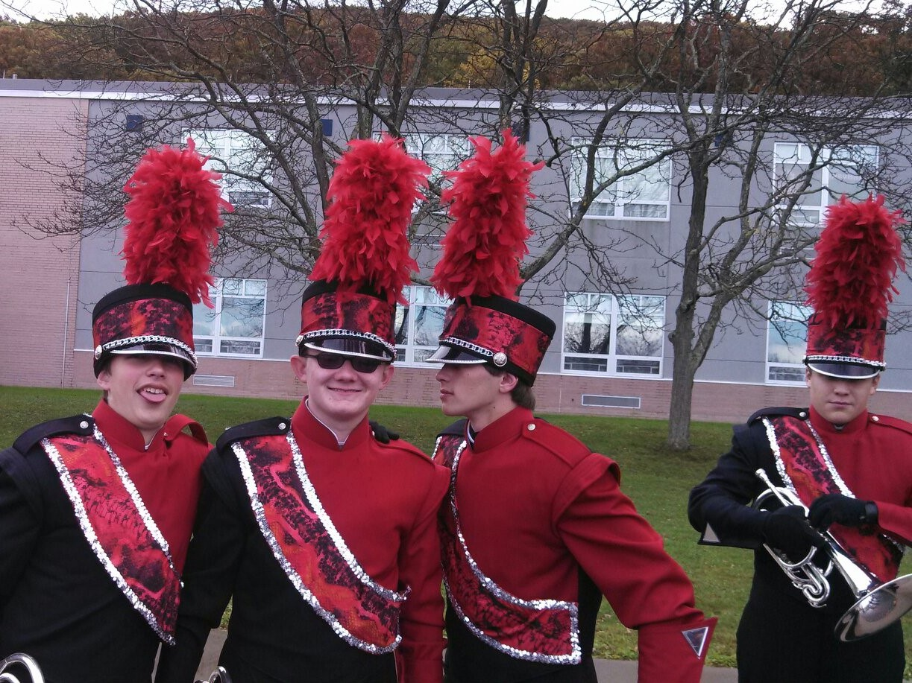